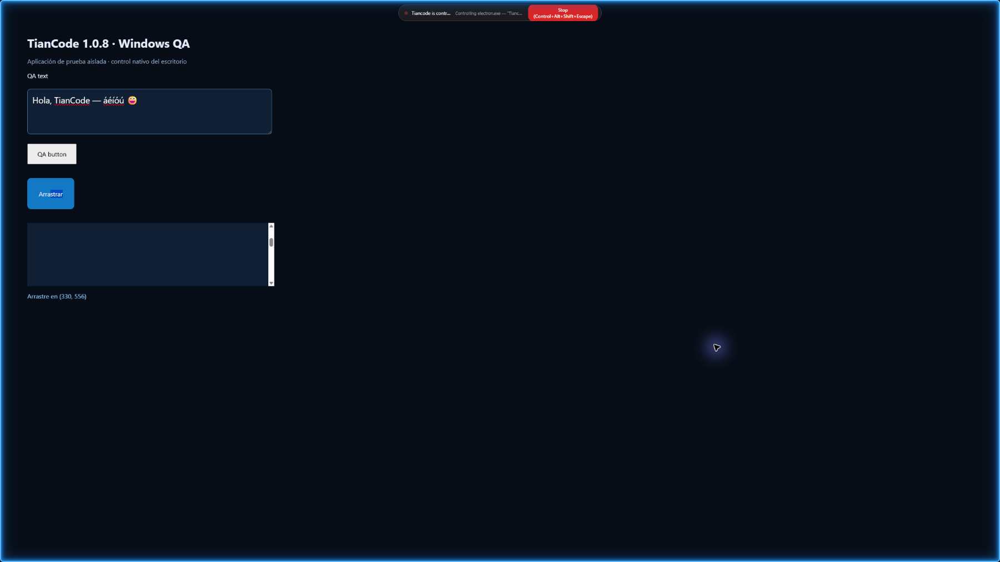

Documentación
La guía oficial de Tiancode: instalación, agentes, skills, modelos locales y gratuitos, GitHub, Descubrir y MCP, plugins, voz, configuración, comandos y solución de problemas.
Controles de Tiancode 1.0.0
El selector Modo del chat aplica Auto, Manual, Aceptar ediciones, Plan u Omitir permisos a las herramientas de la sesión, y se puede cambiar mientras el agente trabaja. El control deslizante de esfuerzo llega hasta Ultracode, y Rápido está dentro del mismo panel; la aceleración nativa depende del proveedor y no se promete una velocidad fija.
Los mensajes que envías mientras el agente responde quedan en una cola que puedes editar, o redirigen el turno actual con «Dirigir». El agente Web App ofrece en Dirección visual seis estilos de ejemplo y «Elegir con la IA»; «Respuestas directas», en General, organiza las respuestas empezando por la acción.
La bienvenida de 1200×850 configura idioma, tema, escala de la interfaz (80 %–120 %), tamaño y ancho de la conversación, pestañas, terminal, línea de tiempo, modelos gratuitos y qué se abre al iniciar. Se puede repasar desde Ajustes › General.
Los modelos gratuitos de OpenCode se activan en Ajustes › Proveedores o Ajustes › Modelos, donde el grupo «OpenCode Free» tiene un interruptor por modelo. La lista sigue el catálogo de OpenCode. Zen limita el uso gratuito desde apps que no son OpenCode; al llegar al límite puedes conectar tu clave de OpenCode Zen.
Uso visual de la PC · 1.0.0
El modelo observa tu pantalla, elige una acción y comprueba el resultado. Ventanas, clics, arrastre, teclado y desplazamiento, con compatibilidad para acciones de UI-TARS.
En Ajustes › Uso de la PC › Escritorio, elige el monitor y configura los permisos. Pide una tarea en el chat; autoriza la aplicación cuando Tiancode te muestre su nombre.
Selecciona un modelo con visión y herramientas. Recibe capturas y contexto de los controles accesibles de Windows; no necesitas un segundo agente ni descargar los pesos de UI-TARS.
La luz azul en los bordes de todos los monitores indica control activo. Detener o el atajo de la barra corta la acción y suelta el ratón. El interruptor principal y los ejecutables vetados siguen aplicándose.
Ejemplo: abre la Calculadora, calcula 23 × 17 y comprueba el resultado antes de terminar.
Control nativo en Windows. UI Automation depende de cada aplicación. Los operadores remotos y Android de UI-TARS requieren servicios adicionales que esta versión no incorpora.

1. Instalación
Tiancode 1.0.0 se distribuye en dos formatos para Windows 10 y 11 (64 bits):
- Instalador NSIS (Tiancode.exe, ~343 MB): instalación clásica con accesos directos y actualizaciones automáticas.
- Versión portable (Tiancode-portable.exe, ~342 MB): sin instalación, se ejecuta desde cualquier carpeta o USB.
Requisitos: Windows 10 u 11 de 64 bits. Los modelos locales necesitan la memoria que indique cada modelo: Tiancode calcula antes de descargar si cabe en tu VRAM y RAM. En el primer arranque, la bienvenida de seis pasos deja la app lista. El CLI funciona además en macOS y Linux.
2. Agentes y sub-agentes
El agente Build trabaja en tu proyecto con herramientas para leer, editar y parchear archivos, buscar con glob y grep, usar LSP, ejecutar la shell, buscar en la web y llevar una lista de tareas. Plan solo lee y propone, y Web App está pensado para crear interfaces.
Tiancode incluye 14 sub-agentes especialistas (nube, datos, fullstack, investigación, seguridad, marketing y más) a los que el agente delega trabajo, o que llamas con @. En Ajustes › Sub-agentes se busca, se filtra y se edita cada uno: modelo, temperatura, pasos máximos, permisos por herramienta, instrucciones adicionales, color y si aparece en el menú @.
$ tiancode --agent plan3. Skills
Tiancode incluye más de 130 skills de ingeniería de software: TDD, revisión de código, auditorías de seguridad y pentesting, rendimiento, CI/CD, Docker, Playwright, Next.js, Tailwind, bases de datos, diseño de interfaces, planificación y más. El agente elige la skill adecuada por sí solo y puede crear skills nuevas.
Ajustes › Skills tiene buscador, filtros con recuento y una ficha con el tipo, el origen, el uso y la ubicación de cada skill, y permite importar skills desde GitHub. Descubrir añade las skills de Anthropic y de Codex.
4. Modelos locales
Ajustes › Modelos Locales busca y descarga modelos GGUF de Hugging Face. El flujo completo:
- En Explorar, busca un modelo y elige una cuantización: la lista muestra el tamaño real de cada archivo.
- Tiancode lee la cabecera GGUF y calcula la VRAM y la RAM que necesita en tu equipo, y propone la configuración de carga (contexto, capas en GPU, hilos, lote y caché KV).
- Descarga el archivo: la descarga se reanuda si la conexión se corta.
- La pestaña «En disco» lista los GGUF que tienes y «Motor» muestra el estado y el registro del motor.
- Elige el modelo en el chat: el motor arranca solo con esa configuración.
El motor es llama.cpp con aceleración Vulkan o en CPU. Tiancode también usa Ollama y LM Studio si están en marcha. La carpeta de modelos se puede cambiar en los ajustes del motor.
5. GitHub
Ajustes › Conexiones › GitHub vincula tu cuenta. Después de iniciar sesión una vez:
- Explora tus repositorios desde la app.
- Clona repositorios existentes o crea otros nuevos.
- Haz commits sin salir de Tiancode.
- En el CLI,
tiancode github installinstala el agente en un repositorio ytiancode pr <n>descarga la rama de la pull request <n>, cambia a ella y arranca la interfaz de terminal.
6. Descubrir, conectores y MCP
Descubrir reúne unas 3600 extensiones: plugins de Claude Code y Codex, skills de Anthropic y de Codex, y servidores MCP del registro de GitHub, el registro oficial y Cline. Tiene filtros por tipo, fuente y categoría, viaja con la app para usarse sin conexión y se renueva cada seis horas.
Conectores ofrece cerca de 300 apps (Gmail, Drive, Notion, Linear, Canva, Stripe…) con su logo real: conectar añade el servidor MCP de la app y abre su inicio de sesión en el navegador.
En Ajustes › MCP y Plugins añades tus propios servidores MCP locales (stdio) o remotos (HTTP o SSE, con OAuth). Cada uno aparece como una tarjeta con su estado, sus herramientas y un menú para editar, reconectar o eliminar. Desde el CLI se gestionan con tiancode mcp.
7. Plugins
Los plugins de Claude Code y Codex se instalan con un clic desde Descubrir: Tiancode traduce sus skills, comandos, sub-agentes y servidores MCP sin pisar nombres que ya existen, deja sus servidores MCP apagados hasta que los actives y, al desinstalar, quita exactamente lo que añadió. Los plugins de npm se instalan con tiancode plugin <paquete>.
8. Voz
El dictado usa Whisper en tu equipo (se descarga la primera vez, unos 146 MB): pulsa para hablar o mantén pulsado para grabar, y prueba el micrófono en Ajustes › Voces. La lectura de respuestas usa voces locales Kokoro y Piper en español o, con tu clave, Fish Audio en la nube, y elige la voz según el idioma de cada texto.
9. Bandeja del sistema
En Ajustes › General › Escritorio, activa «Minimizar a la bandeja del sistema»: al cerrar la ventana, Tiancode se queda en la bandeja del sistema y vuelves a tu conversación con un clic en el icono, sin perder el contexto.
10. Avisos y emparejamiento
Ajustes › Conexiones envía avisos cuando una tarea termina o falla:
- Telegram: recibe los avisos y también acepta mensajes como peticiones, además de
/status,/newy/help. - Discord y Slack: avisos de fin de tarea y de error en tus canales.
- Webhooks: envío de eventos firmados con HMAC-SHA256.
- El botón «Probar» comprueba cada canal y muestra la latencia.
El emparejamiento por red local muestra un código QR para abrir Tiancode en el móvil, la tablet u otro PC, con usuario y contraseña; la contraseña se guarda cifrada.
11. Inteligencia y fiabilidad
- Memoria: el agente guarda lo aprendido en USER.md y MEMORY.md; Ajustes › Inteligencia muestra cuánto ocupan, los edita y los vacía.
- Sesiones anteriores: la herramienta
session_searchbusca texto en el historial de tus sesiones para recuperar contexto. - Compactación: conserva el primer turno y los recientes, poda las salidas largas de herramientas del medio y resume el resto. Se configura en Inteligencia › Contexto.
- Detección de bucles: detiene un agente que repite la misma llamada tres veces seguidas o que encadena 25 herramientas en un turno; se puede desactivar.
- Reparación de llamadas: corrige el JSON roto o truncado que emiten algunos modelos antes de ejecutar la herramienta (pasos derivados de OpenClaw, MIT).
- CodeGraph, AgentShield y decisiones locales: grafo de código del proyecto, permiso obligatorio para comandos críticos y un modelo local opcional que resume el resultado de cada tarea en los avisos.
12. Vista previa y diseño
- Sandbox: el agente arranca, detiene y reinicia el servidor de tu app y lee su estado y registros; reconoce Vite, Next, Astro, Remix, SvelteKit, SolidStart, Qwik, Expo, Eleventy, Parcel y webpack.
- Página aislada: sin cámara, micrófono, portapapeles ni ventanas emergentes; el agente la inspecciona y la usa con referencias estables.
- Inspector:
Ctrl+Alt+Iinspecciona elementos, y si la página queda en blanco aparece «Reparar con IA». - Modo diseño: elige un elemento y añádelo al chat con su selector, su HTML, sus estilos y una captura.
- Cerrar sin bucles: cerrar el Sandbox ya no lo vuelve a abrir, ni con una web ni con una app.
13. Configuración
Ajustes se organiza en cuatro grupos (Escritorio, Servidor, Extensiones e Integraciones) con un buscador global. General reúne Chat, Vista, Espacio de trabajo, Escritorio y Datos; la escala de la interfaz va del 80 % al 120 % y Ctrl + +/− recorre los mismos pasos. El modo «Al abrir Tiancode» elige entre Chat, Code (tu último proyecto) e Inicio.
14. Comandos
El CLI de Tiancode funciona en Windows, macOS y Linux:
tiancode # interfaz de terminal en la carpeta actual
tiancode run "..." # una petición directa (-m proveedor/modelo)
tiancode web # servidor + interfaz web en el navegador
tiancode serve # servidor headless
tiancode models opencode # modelos gratuitos de OpenCode
tiancode providers login # guarda la clave de un proveedor
tiancode --version # versión instalada15. Solución de problemas
- El modelo local va lento: elige una cuantización menor (Q4 en lugar de Q8), un modelo más pequeño o el modo ligero del chat.
- La descarga de modelos falla: comprueba la conexión y el espacio libre en la carpeta de modelos.
- No conecta con el proveedor: revisa la clave en Ajustes › Proveedores.
- Un modelo gratuito avisa de límite: espera a que se renueve o conecta tu clave de OpenCode Zen.
- Un servidor MCP muestra un error: revisa el comando o la URL y su inicio de sesión en Ajustes › MCP y Plugins.
- El dictado no funciona: prueba el micrófono en Ajustes › Voces y deja que termine la descarga de Whisper.
- La app no arranca en modo portable: asegúrate de tener permisos de escritura en la carpeta.
- ¿Sigue el problema? Abre una incidencia adjuntando los registros de la carpeta de datos.
16. Permisos y seguridad
El selector Modo del campo de mensaje decide qué puede hacer la IA sin preguntarte en esa sesión:
- Auto: usa los permisos configurados y pregunta cuando una regla exige aprobación.
- Manual: pregunta antes de cada herramienta, incluidas ediciones y comandos.
- Aceptar ediciones: lee y edita archivos sin preguntar; pide permiso para comandos y otras acciones.
- Plan: solo herramientas de lectura; bloquea cambios y comandos.
- Omitir permisos: aprueba todas las solicitudes. La IA puede leer, editar y ejecutar archivos sin preguntar, incluidos comandos potencialmente destructivos. Las denegaciones explícitas de tu configuración siguen vigentes.
La primera vez que eliges Omitir permisos en un espacio de trabajo (o activas «Aceptar permisos automáticamente» para todos), Tiancode muestra un aviso con la carpeta afectada. Úsalo solo en entornos aislados o desechables: una máquina virtual, un contenedor o una copia del repositorio con los cambios confirmados en git.
- Antes de activarlo, confirma tus cambios (
git commit) para poder deshacer cualquier edición. - No lo uses en carpetas con credenciales, claves privadas o datos que no tengan copia de seguridad.
- Añade denegaciones explícitas en
tiancode.json(por ejemplo"permission": { "bash": { "rm -rf*": "deny" } }) para comandos que nunca deben ejecutarse. - Vuelve a Auto desde el mismo selector cuando termines.